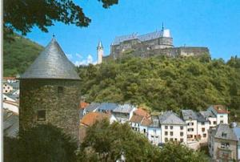
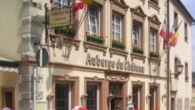
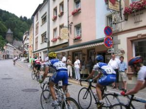
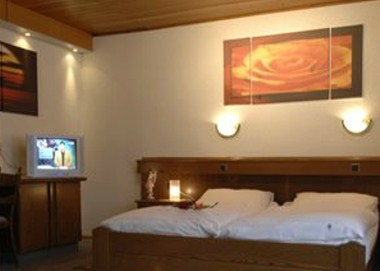
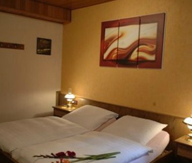
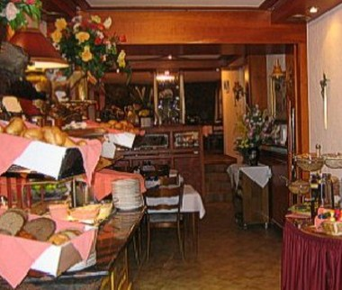
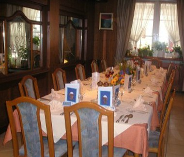

Au pied du château
Une vieille maison de caractère sur la Grand-Rue pavée qui grimpe vers le Château de Vianden, l'un des plus beaux du Grand-Duché, dans l'Eisleck.
L'Auberge du Château occupe une demeure ancienne au cœur du vieux Vianden, à quelques pas de la forteresse médiévale qui domine la vallée de l'Our. Volets fleuris, façade crème, enseigne en fer forgé : la maison veille sur la rue depuis toujours.
Tenue par un couple, la maison cultive une hospitalité personnelle et chaleureuse — on y parle près de cinq langues, on y accueille couples, randonneurs, cyclistes et voyageurs des quatre frontières venus découvrir le château et l'Eifel-Ardennes.



Les chambres d'hôtes
Des chambres soignées et fraîchement rénovées, réparties sur les étages de la maison — calmes, à deux pas du château.

Chambre double
Lit double, literie soignée, ambiance douce et lumineuse. Idéale pour un séjour à deux — la maison est notée 9,5 pour les couples.

Chambre lits jumeaux
Deux lits séparés pour les amis, familles ou voyageurs d'un soir. Salle de bains privative — configuration à confirmer avec l'établissement.
Les commodités
- ◷Terrasse — détente aux beaux jours
- ≋WiFi gratuit — dans toute la maison
- ⛭Garage sécurisé — vélos & motos à l'abri
- ✿Chiens — acceptés sur demande (supplément)
- ⌂~32 chambres — sur 3 étages, sans ascenseur · non-fumeur
- ✦Panier-repas — pour randos & sorties vélo
La table & le petit-déjeuner
Une salle boisée à l'ancienne, une cuisine franco-luxembourgeoise généreuse : petit-déjeuner copieux, banquets et repas de famille dans la salle historique.
La carte, esquissée
Prix non publiés — tarifs 2026 à confirmer avec l'établissement.

Le petit-déjeuner
Le rituel du matin : un buffet frais et copieux, salué dans les avis, pour bien démarrer la montée au château ou une journée de rando.
- Pains & viennoiseries
- Charcuteries & fromages
- Jus, boissons chaudes

Banquets & groupes
La grande salle boisée se dresse pour les fêtes de famille, repas de groupes et banquets — de 30 à 70 couverts. Menus & formules à composer avec les hôtes.
- 30 à 70 couverts
- Fêtes de famille & groupes
- Menus sur demande · à confirmer
Le bar, l'ambiance
Boiseries sombres, banquettes rouges, lampes de laiton et fleurs sur les tables : le cœur chaleureux d'une auberge sans manières.
Le seuil — visite & réservation
Poussez la porte, sur la Grand-Rue, au pied du château. Écrivez ou appelez les hôtes pour une chambre, une table de groupe ou un banquet.
Adresse
74, Grand-Rue
L-9410 Vianden
Luxembourg · code postal à confirmer (9410/9401)
Service & horaires
Petit-déjeuner pour les hôtes · groupes & banquets sur réservation. Service à la carte midi/soir et horaires précis à confirmer.